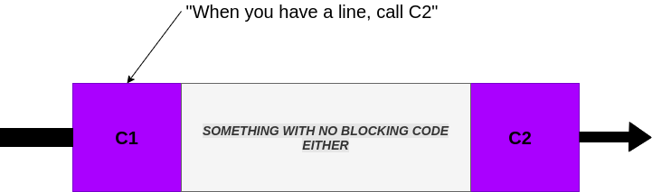
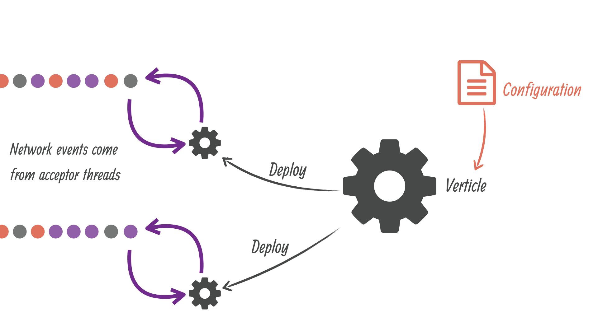
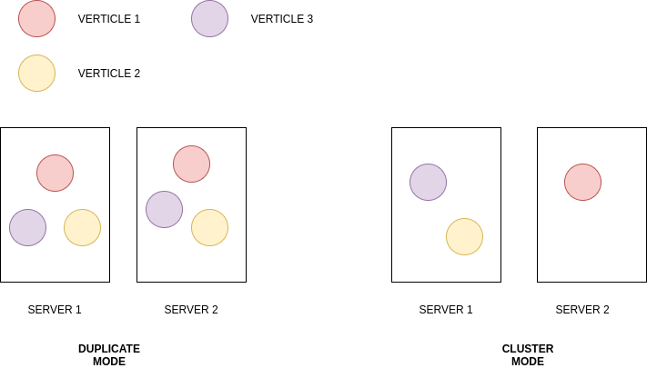

git@gitlab.talanlabs.com:Lab9/ruche-vertx.git
vert.x is tool-kit for building reactive application on JVM
a blocking code
while (isRunning) {
String line = bufferedReader.readLine();
switch(line.subString(0, 4)) {
case "ECHO" :
System.out.printLn("HELLO");
break;
// other case ...
default:
System.out.printLn("UNKWON");
}
}code C1
String line = bufferedReader.readLine();code C2
switch(line.subString(0, 4)) {
case "ECHO" :
System.out.printLn("HELLO");
break;
// other case ...
}continuation model

vert.x implement multiple reactor pattern
vert.x attaches 2 event loops per CPU core thread.
vert.x handler api: lambda function
readFile(path: String, handler: Handler<AsyncResult<Buffer>>)
vertx.fileSystem().readFile("readme.txt", r -> {
if (r.succeeded()) {
System.out.println(result.result());
} else {
System.err.println(result.cause());
}
});vert.x promise/future api
Future<void> readFile() {
Promise<void> promise = Promise.promise();
// promise.fail(cause)
// promise.resolve()
return promise.future();
}promise are your friend, use it
verticle is the base compoment of vert.x (service, database, http server, ...)
verticle must be deployed in a event-loop
create a verticle
class HttpVerticle extend AbstractVerticle {
@Override
public void start(Promise<Void> promise) {
//do async operation
}
}deploy a verticle
vertx.deployVerticle(
new HttpVerticle(),
new DeploymentOptions()
);

point to point messaging
vertx.eventBus().request(ADDRESS, message, result -> {
// do something
})publish / subscribe broadcast messages
eventBus.publish(ADDRESS, message);
message object must be serializable
service proxy are a common pattern in vert.x
vertx-codegen can do it for you
@ProxyGen
@VertxGen
public interface QuestionDatabaseService {
//some method
void list(Request request, Handler handler);
}
Warning: parameter in service must be:
Objectif: split our monolitic application
Warning: Cluster managers do not handle the event bus inter-node transport, this is done directly by Vert.x with TCP connections
Vert.x is a ideal for microservice
vert.x offers various component to build microservice-based applications
vert.x can communicate via the event bus